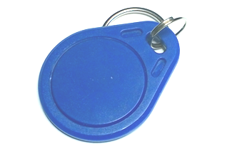

RFID-sensor© 2018, ProtoIt Platform: RASPBERRY |  |
Beschrijving:
Een RFID-sensor werkt samen met ID-kaarten (ook wel tags genoemd).
De sensor leest de kaart en kan de ID weergeven.
Let op! Voor dit apparaat heb je ProtoIt met sudo nodig.
Onderdelen:
RFID-sensor
Instellingen:
| Eerste ID | Eerste vooringestelde ID, dat moet worden herkend.Standaard op "XX XX XX XX" ingesteld. |
| Tweede ID | Tweede vooringestelde ID, dat moet worden herkend.Standaard op "XX XX XX XX" ingesteld. |
| Derde ID | Derde vooringestelde ID, dat moet worden herkend.Standaard op "XX XX XX XX" ingesteld. |
| Vierde ID | Vierde vooringestelde ID, dat moet worden herkend.Standaard op "XX XX XX XX" ingesteld. |
| ID Gelezen | Het signaal ID Gelezen wordt uitgezonden nadat een ID-kaart wordt gepresenteerd. |
| ID Gewijzigd | Het signaal ID Gewijzigd wordt uitgezonden nadat een andere ID-kaart wordt gepresenteerd. |
| Is eerste ID | Dit signaal wordt uitgezonden als de kaart met de vooringestelde eerste ID wordt gepresenteerd. |
| Is tweede ID | Dit signaal wordt uitgezonden als de kaart met de vooringestelde tweede ID wordt gepresenteerd. |
| Is derde ID | Dit signaal wordt uitgezonden als de kaart met de vooringestelde derde ID wordt gepresenteerd. |
| Is vierde ID | Dit signaal wordt uitgezonden als de kaart met de vooringestelde vierde ID wordt gepresenteerd. |
| Kaart-ID | Bevat de ID van de laatst gelezen ID-kaart. |